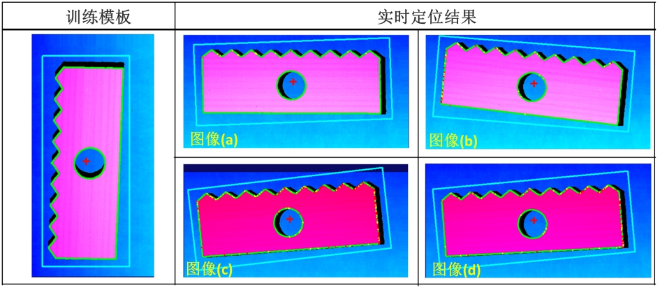
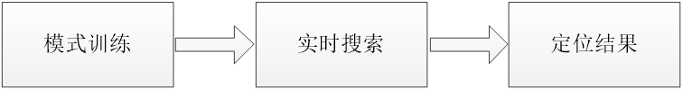
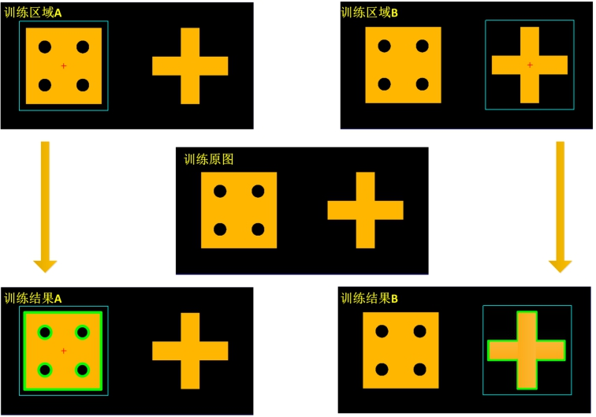

在实际的工业3D应用中，常需要对实时获取的深度图像进行定位，从而对指定的ROI区域进行精确的测量或检测等。点云定位工具能够在实时深度图像中进行一个到多个实时模式与训练模式之间的匹配，定位结果包含了匹配分数、位置、角度等诸多信息。
图1所示为点云定位工具的一个应用示例。训练模板为深度图像中的工件，训练参考点坐标为(800.00,1700.00)；实时图像(a)-(d)为带有一定旋转和平移的深度图像。从图1中的实时定位结果可知，点云定位工具对于图(a)~图(d)这四幅图像有着较好的定位效果。

根据训练的深度几何特征，找出匹配几何的位置，给出结果个数、结果数组。
点云定位工具通过模式训练来获取模板图像的几何特征描述，几何特征可以精确、快速的进行平移，旋转等变换。深度图像定位工具在实时图像中搜索与训练模式类似的边缘几何特征模式，计算实时图像中结果模式的位置、以及其相对于训练模式的旋转角度。
图2所示为点云定位工具的整体流程图。点云定位工具首先进行模式训练得到训练特征模式，然后经过实时搜索得到定位结果。

图3所示为点云定位工具模式训练的示意图。在图5中，点云定位工具通过在训练图像上使用ROI来选取目标来进行模式训练。训练过程中针对选中区域内的有效图像，提取边缘信息，经过进一步处理之后得到训练模式。在图5中当ROI区域为训练区域A时，获取到的训练结果为训练结果A； 当ROI区域为训练区域B时，获取到的训练结果为训练结果B。目前，点云定位工具仅支持训练一个训练模式，不支持训练多个模式。

定位工具在用户设置的一到多个自由度组成的搜索空间下进行实时搜索。由于深度图像代表所扫描物体的真实尺寸信息，因此，目前点云定位工具的自由度搜索空间仅支持平移自由度和旋转自由度，不支持和缩放相关的自由度。在实际应用中，设置的自由度范围应接近可能出现的最大自由度范围，减少不必要范围搜索带来的工具耗时。
工具执行流程：配置输入→设定属性→训练图像→执行搜索。
双击工具在弹出窗口中配置输入图像，如图4
属性栏设置如图5，右键工具→属性→打开高级界面设置如图6


右键工具→属性→打开高级界面→训练参数，如图7；

（1）首先选择“训练图像”来源：
a.“输入图像"：训练图像从参数链“输入图像”获取；
b.“加载图像"：训练图像由离线加载方式从文件获取；
（2）点击“获取训练图像”：更新训练图像，点击后会先进行弹框提示；
（3）点击“执行模式训练”：进行训练；
根据设定的搜索参数和判定结果参数返回相应的搜索结果，如图8；

无
| 分类 | 参数名称 | 参数描述 |
|---|---|---|
| 属性窗口 | 是否开启全图搜索 | 开启全图搜索的开关。当选择“是”时，整幅实时采集的图像都是该工具的搜索范围；当选择“否”时，Edit视图中的矩形ROI是该工具的搜索范围。搜索区域要大于训练区域。 |
| 是否外部输入搜索区域 | 开启后，可以通过参数链编辑对话框链接搜索区域，从外部输入搜索区域。 | |
| 搜索区域 | 是否开启全图搜索为“否”时，Edit视图中的矩形ROI是该工具的搜索范围。搜索区域要大于训练区域。 | |
| 搜索模式 | 包含快速、高精、高精稳健三种形式，耗时依次增加，精度依次提升。 | |
| 搜索个数 | 设置最多的搜索结果个数。 | |
| 接受阈值 | 训练模板与实时搜索结果之间有一个匹配程度的分数，当匹配分数高于接受阈值时表明实时搜索成功。接收阈值的取值范围是(0,1]。 | |
| 是否使用粗匹配接受阈值 | 选择“是”，则显示粗匹配接受阈值参数。 | |
| 粗匹配接受阈值 | 粗匹配接受阈值是对粗匹配定位结果评价分数的最低要求。低于粗匹配接受阈值的粗定位结果为无效匹配，将不进入精匹配过程，反之将会进入精匹配过程。 | |
| 搜索最低/最高角度 | 搜索的角度范围，最低角度>=-360°，最高角度<=360°，最低角度<最高角度。 | |
| 搜索角度范围 | 实时搜索时，判断位置信息相同的多个不同定位结果为一个结果的旋转角度差的上限值。该阈值主要用于滤除多个位置信息均相同，但旋转角度不同的匹配结果。当匹配记过的X和Y位置信息都相同时，则删除旋转角度之差在搜索角度范围内的匹配结果，最终仅保留一个得分最高的匹配结果。取值范围[0,360]，支持小数，一般按默认值360度即可 。 | |
| 对比度阈值 | 对比度阈值为最终可接受定位结果对比度的最小值，其中定位结果对比度为模式特征所有边界点的梯度幅值的中值。定位结果低于对比度阈值的为无效匹配，反之为有效匹配。取值范围为(0, 255]。 | |
| 重叠比例阈值 | 重叠比例阈值为判断两个有重叠部分的定位结果为一个结果的重叠比例需要满足的下限值。高于重叠比例阈值的定位结果为无效匹配，即判定为重复结果，反之视为有效匹配。该阈值在快速算法下不可用。取值范围(0,1]。 | |
| 混叠阈值 | 反映的是训练模式中没有的特征在实时定位结果中被找到的多少，实时定位结果中含有而训练模板中没有的额外特征。混乱点越多，混叠值越高。取值范围为[0,+∞)，支持小数。 | |
| 拟合误差阈值 | 实时搜索过程中，可接受的利用最小二乘法求解定位结果的RMS误差的最小值。拟合误差反映的是训练模式与实时定位结果之间的差异程度。高于阈值的定位结果为无效匹配，低于阈值的定位结果为有效匹配。取值范围[1,100]。该阈值在快速算法下不可用。 | |
| 是否使用实时噪声阈值 | 选择“是”，则启用是否自动噪声阈值和噪声阈值参数 | |
| 是否自动噪声阈值 | 选择“是”，则由算法自动确定实时噪声阈值；选择“否”，则启用噪声阈值参数。 | |
| 噪声阈值 | 实时搜索时，实时图像中有效边缘点梯度幅值的最小值。实时待搜索图像中，低于实时噪声阈值的边缘点将视为噪声点被滤除。取值范围[0,255]。 | |
| 结果排序方式 | 按照指定的方式对定位结果进行排序。支持的结果排序方式有X、Y、Score三种。 | |
| 图像窗口 | 训练区域 | 显示模板图像中参与训练的仿射矩形区域。与属性窗口中的“训练区域”是同一个参数。 |
| 手动输入标记点 | 显示标记点，用于辅助定位。当属性窗口中“是否手动输入标记点”选择为“是”，并输入了标记点的X轴、Y轴坐标后，图像上的标记点会随之移动到相应位置。 | |
| 搜索区域 | 显示实时图像上参与搜索的矩形区域。与属性窗口中的“搜索区域”是同一个参数。 | |
| 数据链 | 输入深度图像 | 用来实时搜索的图像。 |
| 训练深度图像 | 用来进行模板训练的图像。 | |
| 外部输入搜索区域 | 属性窗口的“是否外部输入搜索区域”选择“是”时，该参数有效。该参数链接的通常是矩形生成工具的输出结果。 | |
| 高级界面 | 启用掩膜/设置掩膜图像 | 在模板训练过程中，屏蔽掉不参与模式训练的区域，减少参与模式训练的特征。 |
| 编辑当前模式 | 对训练模式的特征链进行手动编辑 。 | |
| 载入/保存（所有）模板 | 支持对当前模式进行保存、加载 | |
| 获取训练图像 | 获取训练所需要的图像 | |
| 执行模式训练 | 针对获得的训练图像进行模板训练 | |
| 颗粒度 | 图像中最小检测特征的度量，是对要检测的最小图像特征尺寸的一种描述。取值范围[1,16]，颗粒度越大，采样间隔越大，训练时提取的最小特征尺寸越大。随着颗粒度增加，能获取特征的目标尺寸增大，有效特征数量不断减少。 | |
| 精细颗粒度 | 模式训练过程中用于检测精细特征所设置的较小颗粒度，取值范围[1,16]。精细颗粒度可以有效地保留小尺寸目标的边缘特征或大尺寸目标中的局部细节特征，可提高实时搜索的定位精度，但可能导致定位耗时增多。 | |
| 噪声阈值 | 模式训练过程中，有效边缘点梯度幅值的最小值。梯度幅值低于噪声阈值的边缘点将视为噪声点被滤除。取值范围[1,255]。 | |
| 边缘强度 | 模式训练过程中，有效边缘特征链（由多个有效边缘点组成）的梯度幅值和的最小值。梯度幅值和低于边缘强度阈值的短链和弱边缘长链将被滤除，取值范围[1, 5000000]。 | |
| 训练区域 | 模板图像中参与训练的仿射矩形区域。 | |
| 训练标记点 | 标记点用于辅助定位。当属性窗口中“是否手动输入标记点”选择为“是”，并输入了标记点的X轴、Y轴坐标后，图像上的标记点会随之移动到相应位置。 | |
| 中心标记点 | 把标记点放到训练区域的中心。 | |
| 显示控制 | 控制是否显示辅助标记点或是特征的显示情况，包括粗糙特征显示或是精细特征显示。 | |
| 搜索模式 | 包含快速、高精、高精稳健三种形式，耗时依次增加，精度依次提升。 | |
| 搜索个数 | 设置最多的搜索结果个数。 | |
| 接受阈值 | 训练模板与实时搜索结果之间有一个匹配程度的分数，当匹配分数高于接受阈值时表明实时搜索成功。接收阈值的取值范围是(0,1]。 | |
| 是否使用粗匹配接受阈值 | 选择“是”，则显示粗匹配接受阈值参数。 | |
| 粗匹配接受阈值 | 粗匹配接受阈值是对粗匹配定位结果评价分数的最低要求。低于粗匹配接受阈值的粗定位结果为无效匹配，将不进入精匹配过程，反之将会进入精匹配过程。 | |
| 全图搜索 | 当选择“是”时，整个实时的采样图片都是该工具的搜索范围；当选择“否”时，“搜索区域”视图中的仿射矩形是该工具的搜索范围。搜索区域要大于训练区域。同属性界面中的“开启全图搜索”参数。 | |
| 载入/保存参数 | 支持对搜索参数的保存加载 。 | |
| 搜索最低/最高角度 | 搜索的角度范围，最低角度>=-360°，最高角度<=360°，最低角度<最高角度。 | |
| 搜索角度范围 | 实时搜索时，判断位置信息相同的多个不同定位结果为一个结果的旋转角度差的上限值。该阈值主要用于滤除多个位置信息均相同，但旋转角度不同的匹配结果。当匹配记过的X和Y位置信息都相同时，则删除旋转角度之差在搜索角度范围内的匹配结果，最终仅保留一个得分最高的匹配结果。取值范围[0,360]，支持小数，一般按默认值360度即可 。 | |
| 对比度阈值 | 对比度阈值为最终可接受定位结果对比度的最小值，其中定位结果对比度为模式特征所有边界点的梯度幅值的中值。定位结果低于对比度阈值的为无效匹配，反之为有效匹配。取值范围为(0, 255]。 | |
| 重叠比例阈值 | 重叠比例阈值为判断两个有重叠部分的定位结果为一个结果的重叠比例需要满足的下限值。高于重叠比例阈值的定位结果为无效匹配，即判定为重复结果，反之视为有效匹配。该阈值在快速算法下不可用。取值范围(0,1]。 | |
| 混叠阈值 | 反映的是训练模式中没有的特征在实时定位结果中被找到的多少，实时定位结果中含有而训练模板中没有的额外特征。混乱点越多，混叠值越高。取值范围为[0,+∞)，支持小数。 | |
| 拟合误差阈值 | 实时搜索过程中，可接受的利用最小二乘法求解定位结果的RMS误差的最小值。拟合误差反映的是训练模式与实时定位结果之间的差异程度。高于阈值的定位结果为无效匹配，低于阈值的定位结果为有效匹配。取值范围[1,100]。该阈值在快速算法下不可用。 | |
| 是否使用实时噪声阈值 | 选择“是”，则启用是否自动噪声阈值和噪声阈值参数 | |
| 是否自动噪声阈值 | 选择“是”，则由算法自动确定实时噪声阈值；选择“否”，则启用噪声阈值参数。 | |
| 噪声阈值 | 实时搜索时，实时图像中有效边缘点梯度幅值的最小值。实时待搜索图像中，低于实时噪声阈值的边缘点将视为噪声点被滤除。取值范围[0,255]。 | |
| 执行搜索 | 在已经训练的前提之下，执行一次搜索任务。 | |
| 显示结果位置 | 控制训练标记点在实时图像中的显示。 | |
| 显示结果区域 | 控制训练区域在实时图像的显示。 | |
| 显示结果辅助点 | 控制训练标记点在实时图像中的显示。 | |
| 显示参考特征 | 控制训练特征实时图像中的显示。 | |
| 结果个数上限 | 设定结果个数上限，默认为“——”不判定，可设置的判定区间为[0, 5000]且大于下限，当结果个数大于上限时执行结果为失败。 | |
| 结果个数下限 | 设定结果个数下限，默认为“——”不判定，可设置的判定区间为[0, 5000]且小于上限，当结果个数小于下限时执行结果为失败。 | |
| 结果位置X上限 | 设定结果位置X上限，默认为“–.——”不判定，可设置的判定区间为[0, 100000]且大于下限，当结果位置X大于上限时执行结果为失败。 | |
| 结果位置X下限 | 设定结果位置X下限，默认为“–.——”不判定，可设置的判定区间为[0, 100000]且小于上限，当结果位置X小于下限时执行结果为失败。 | |
| 结果位置Y上限 | 设定结果位置Y上限，默认为“–.——”不判定，可设置的判定区间为[0, 100000]且大于下限，当结果位置Y大于上限时执行结果为失败。 | |
| 结果位置Y下限 | 设定结果位置Y下限，默认为“–.——”不判定，可设置的判定区间为[0, 100000]且小于上限，当结果位置Y小于下限时执行结果为失败。 | |
| 结果角度上限 | 设定结果角度上限，默认为“–.——”不判定，可设置的判定区间为[-360, 360]且大于下限，当结果角度大于上限时执行结果为失败。 | |
| 结果角度下限 | 设定结果角度下限，默认为“–.——”不判定，可设置的判定区间为[-360, 360]且小于上限，当结果角度小于下限时执行结果为失败。 | |
| 结果分数上限 | 设定结果分数上限，默认为“–.——”不判定，可设置的判定区间为[0, 1]且大于下限，当结果分数大于上限时执行结果为失败。 | |
| 结果分数下限 | 设定结果分数下限，默认为“–.——”不判定，可设置的判定区间为[0, 1]且小于上限，当结果分数小于下限时执行结果为失败。 |
| 分类 | 参数名称 | 参数描述 |
|---|---|---|
| 监视窗口 | 输入深度图像 | 输入图像宽度、高度、像素大小。 |
| 标记点 | 标记点用于辅助定位。 | |
| 训练标记点 | 标记点用于辅助定位。 | |
| 结果个数 | 搜索结果个数。 | |
| 搜索结果数组 | 搜索结果组成的数组。 | |
| 二维线性变换 | 该工具输出的二维线性变换是指该工具二维线性变换数组中的第一组值。 | |
| 二维线性变换数组 | 二维线性变换是指目标相对于模板的平移、旋转、缩放变换。二维线性变换数组是指在该工具在某一次执行完之后，所有二维线性变换所组成的数组。 | |
| 搜索坐标 | 该工具输出的搜索坐标是指搜索坐标数组的第一组值。它与输出的二维线性变换针对同一个搜索结果。 | |
| 搜索坐标数组 | 搜索坐标是指标记点实时搜索结果，搜索坐标数组是指该工具在某一次执行完后，所有搜索标记点所组成的数组。 | |
| 执行结果 | 工具执行结果。 | |
| 执行时间 | 工具执行时间。 | |
| 图像窗口 | 搜索位置 | 模板中的搜索区域在实时搜索图像上的区域范围。 |
| 搜索坐标 | 搜索坐标是指标记点实时搜索结果，同监视窗口中的“搜索坐标”参数。 | |
| 标记点 | 标记点用于辅助定位。 | |
| 执行结果 | 显示工具执行结果，执行成功显示“OK”，执行失败显示“NG”，同监视窗口的执行结果参数。 | |
| 数据链 | 输入深度图像 | 用于实时搜索的图像。同监视窗口中的“输入图像”参数。 |
| 训练图像 | 用来进行模板训练的图像。与“参数”章节里“数据链”中的“训练图像”是一个参数。 | |
| 训练标记点坐标 | 标记点用于辅助定位。 | |
| 搜索结果数组 | 所有满足预设条件的结果信息。同监视窗口中的“搜索结果数组”参数。 | |
| 搜索坐标数组 | 搜索坐标是指标记点实时搜索结果，搜索坐标数组是指该工具在某一次执行完后，所有搜索标记点所组成的数组。同监视窗口的“搜索坐标数组”参数。 | |
| 二维线性变换数组 | 二维线性变换是指目标相对于模板的平移、旋转、缩放变换。二维线性变换数组是指在该工具在某一次执行完之后，所有二维线性变换所组成的数组。同“监视窗口”中的“二维线性变换数组”是同一个参数。 | |
| 二维线性变换 | 该工具输出的二维线性变换是指该工具二维线性变换数组中的第一组值。与“监视窗口”中的“二维线性变换”是同一个参数。 | |
| 搜索坐标 | 该工具输出的搜索坐标是指搜索坐标数组的第一组值。它与输出的二维线性变换针对同一个搜索结果。与“监视窗口”中的“搜索坐标”是同一个参数。 |
参见“\Samples\3D\深度图\3D测量工具.gvp”。